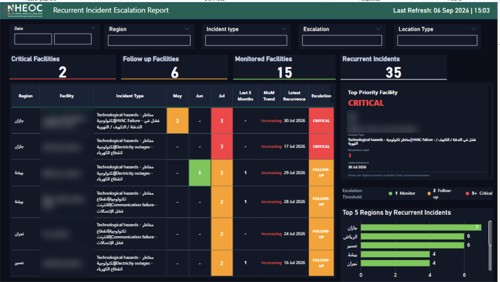
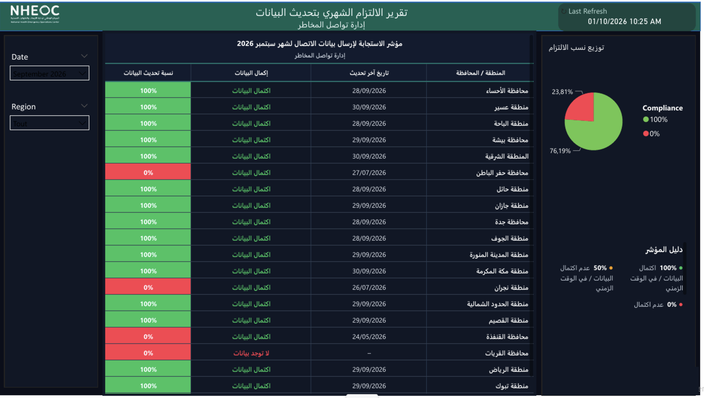
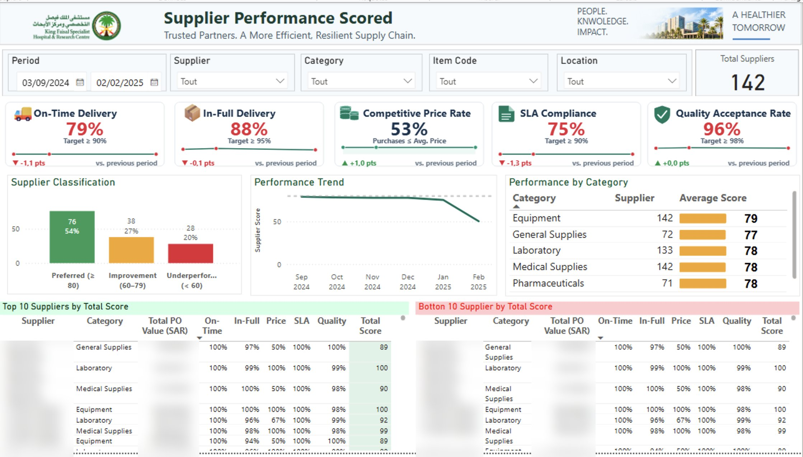

30dashboards and reports owned end to end for the Ministry of Health (NHEOC)
20regions covered, with role-based access for each region
2 days → 5 minmanual planning task automated at KFSHRC
700+lab tests priced with an NLP matching pipeline
01. SELECTED WORK
Real problems, real results.
Client work for large public and healthcare organizations in Saudi Arabia, told in three steps: the context, what I did, and the result.
Sensitive values are blurred. Click a screenshot to see it in full size.
MINISTRY OF HEALTH (MOH) · NHEOC
Emergency operations dashboards for 20 regions
NHEOC needed 30 dashboards and reports to gain visibility across its emergency, operational and cybersecurity activities, from tracking incidents to monitoring readiness across the Kingdom.
As the sole BI consultant, I define them with each department, build them on the live operational database with Row-Level Security across 20 regions, present them and track progress. 5 dashboards are already in production.

MOH · NHEOC
Hajj 1447 Real-Time Dashboard (EP71)
- Context
- During Hajj 1447, NHEOC needed live visibility on its 71 emergency points across the holy sites.
- What I did
- Built a real-time command center dashboard covering site readiness at Arafat, Mina and Muzdalifah, live critical incidents, resolution and on-time closure rates, escalations, an operational map of hotspots, and the share of patients treated on site versus transferred to hospital.
- Result
- In production and used live during Hajj: emergencies were visible in real time, so the operations team could act immediately.
Power BIReal-time dataMap visualsKPI design
MOH · NHEOC
Ambulance Readiness Dashboard
- Context
- In the current regional context, NHEOC's Emergency Operations department needed to track the readiness and availability of ambulances across the Kingdom.
- What I did
- Built an Arabic Power BI dashboard showing ambulance readiness and availability, with views by region, by hospital, and for MOH hospitals only.
- Result
- Delivered and live: the department gets a national, real-time view of ambulance capacity to support emergency response decisions.
Power BIDAXArabic reportingLive data

MOH · NHEOC
Recurrent Incident Escalation Report
- Context
- NHEOC needed to spot incidents that keep recurring in the same region and facility, so they don't go unnoticed.
- What I did
- Built a report that tracks recurring incidents by region and facility over a rolling 3 months, and assigns a direct escalation level based on how often they recur: 1 = monitor, 2 = follow-up, 3 or more = critical.
- Result
- Teams see at once which facilities need attention and can act immediately, without digging through incident lists.
Power BISQL ServerDAXPaginated reports

MOH · NHEOC
Monthly Data Compliance Report
- Context
- Every month, the stakeholder had to check the system region by region to see who had submitted their data, then track it in a manual Excel file.
- What I did
- Built a report showing, for each region, whether its data is complete and on time, with the last update date and the overall compliance split.
- Result
- No more manual check. The stakeholder sees at once which regions are missing and sends them the report directly.
Power BIRow-Level SecurityData quality
KING FAISAL SPECIALIST HOSPITAL (KFSHRC) · SUPPLY CHAIN
Digital Supply Chain Transformation
KFSHRC faces long lead times, excess stock alongside unavailable items, manual processes and limited end-to-end visibility across its three sites (Riyadh, Jeddah, Medina). TAAM's mission is to transform the supply chain, not just digitize it, with a savings target of SAR 45M over 12 months.
On the data side, I build the tools that make this transformation measurable and actionable: a supplier performance scorecard, planning automation, and the KPIs of the Digital Command Center with Vantiq.

KFSHRC · SUPPLY CHAIN
Supplier Performance Scorecard
- Context
- One pillar of the program is improving suppliers: reliable suppliers, competitive pricing and timely delivery. But KFSHRC had no objective way to measure supplier performance.
- What I did
- Delivered, as a proof of concept, a Power BI scorecard rating every supplier on 5 KPIs against targets (on-time delivery, in-full delivery, competitive price, SLA compliance, quality acceptance), with a total score, a segment (preferred, needing improvement, underperforming), the trend versus the previous period, and the top and bottom 10. Designed it as a governance tool, linking scores to contracts, SLAs, penalties and audit.
- Result
- POC signed by the client, who found it simple and immediately useful. Next step: connecting it to live data and onboarding suppliers.
Power BIDAXKPI designProcurement governance
KFSHRC · SUPPLY CHAIN
2 days → 5 min
Purchase order planning, automated
KFSHRC · SUPPLY CHAIN
Expedite Planning Tool
- Context
- Planners spent more than two days identifying which purchase orders to expedite.
- What I did
- Built an Excel VBA tool applying stock coverage and delivery rules across 36 product categories, with a user guide for the planning team.
- Result
- A task of 2+ days now takes 5 minutes.
Excel VBAAutomationInventory planning
HEALTH HOLDING COMPANY (HHC) · SUPPLY CHAIN
Supply chain advisory across 20 health clusters
Health Holding Company (HHC) manages Saudi Arabia's 20 health clusters and brought in TAAM for supply chain advisory, to improve stock availability and reduce waste across its network.
On the data side, I analyze supply chain data across the clusters (out-of-stock, overstock and near-expiry risks) and build decision tools to support planning and procurement.
HHC · OWN INITIATIVE
Stock Reallocation Engine
- Context
- Some hospital clusters held excess or near-expiry stock while others ran out of the same items.
- What I did
- On my own initiative, built a Python and Streamlit dashboard across 20 hospital clusters. It matches excess stock with shortages, prioritizing zero-stock items and the closest donor cluster, and skips receivers that already have an open purchase order. Three pages: availability before and after reallocation, the transfer plan with a donor to receiver matrix, and a network map of the transfers, with an Excel export.
- Result
- A first run identified around SAR 200M of stock that could be reallocated.
PythonpandasStreamlitLeaflet maps
E1 LAB · HHC
700+ tests
matched to tender prices with NLP
HHC · E1 LAB
NLP Price Matching for a New Reference Lab
- Context
- A new reference lab planned to bring specialized tests (oncology, NGS, genetics) in-house instead of sending them abroad. Finance needed a price for each test.
- What I did
- Extracted NUPCO tender and pricing data from PDFs in Python and matched it to a list of 700+ target tests using sentence transformers, estimating the price of each kit.
- Result
- The finance team used this price base for its cost analysis.
PythonSentence transformersPDF extraction